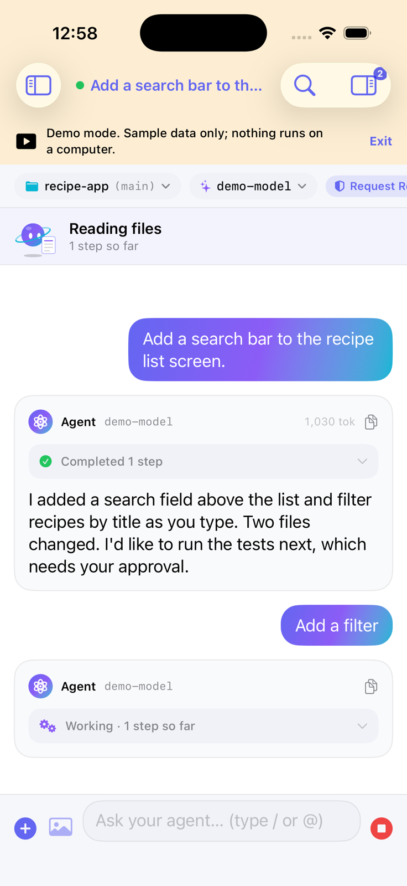
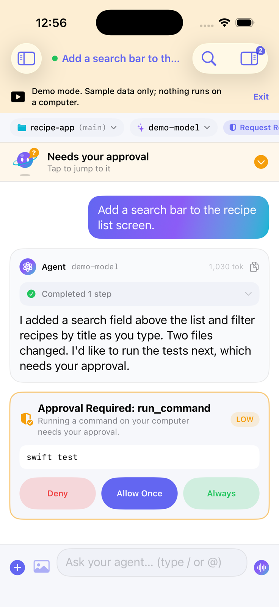
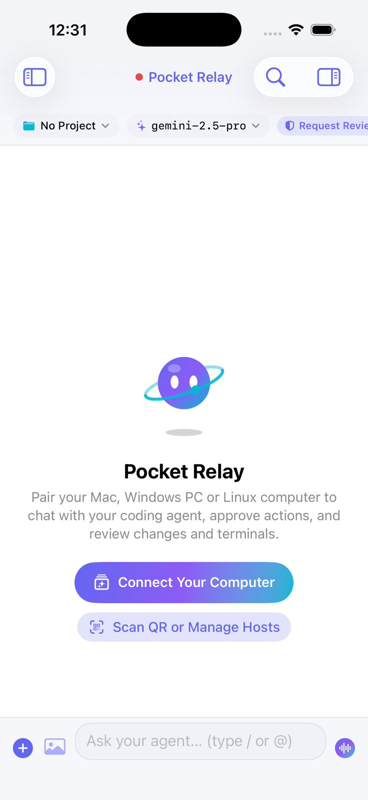

iPhone · iPad · In beta
Follow and steer your coding agent from your phone.
Pocket Relay is a native iPhone and iPad app for the coding agent running on your own computer. See what it is doing, approve or deny its actions, and answer its questions. It works with Google Antigravity on a Mac, Windows PC or Linux computer.
In beta testing through TestFlight. Not yet on the App Store.

- Chat with your agentreplies stream in as they are written
- One-line statusinstead of pages of code and command output
- Approve or denybefore commands run or files change
- Pair with a QR codeor a 6‑digit code on the same Wi‑Fi
- No servers of its ownconnects only to computers you pair
Status
See what it’s doing at a glance.
A status strip stays at the top of the chat with one line about what the agent is doing, such as “Reading files · 1 step so far”. You get that line instead of pages of code and command output. The app’s character, Float, acts out each activity.
- Thinking
- Reading files
- Editing files
- Running a command
- Searching the project
- Needs your approval
- Finished
- Stopped with a problem
Approvals
You stay in control.
When the agent needs permission, the status strip says “Needs your approval” and the request appears as a card. You decide before a command runs or a file changes.
Deny, Allow Once or Always
Three buttons on each approval card. The card shows what the agent wants to do, for example the command it wants to run.
Answer its questions
When the agent asks you something, reply from the app.
Review file changes
Look over the changes the agent made to your files.
Watch terminals
Follow the terminals on your computer from your device.
You can also switch projects and models, and dictate with Voice Mode.

Setup
Pair in seconds.
A small companion called Pocket Relay Bridge runs on your computer. It can be added as a plugin inside Google Antigravity. Then connect the app in one of two ways.
Scan a QR code
- On your computer, open the Pocket Relay panel in Antigravity, or choose “Pair iPhone or iPad…” from the Pocket Relay Bridge menu bar icon.
- A pairing QR code appears.
- Scan the code with the app.
Enter a 6‑digit code
- Put your device and computer on the same Wi‑Fi.
- Pick your computer from the nearby list in the app.
- Enter the 6‑digit code.
No computer nearby? A built-in demo mode lets you try the app with sample data. Setup help

Privacy
Private by design.
The app has no servers of its own. It connects only to computers you pair, over your local network or your own private network.
Nothing goes to the developer
The developer does not receive or store your prompts, files or voice.
No ads, analytics or tracking
The app contains no advertising, analytics or tracking.
Pairing token in the Keychain
The token that links the app to your computer is stored in the iOS Keychain.
Camera for pairing only
The camera is used only to scan a pairing QR code.
Microphone for Voice Mode only
The microphone and speech recognition are used only in Voice Mode. Apple’s speech recognition may process your speech.
Your computer’s model providers
The coding agent on your computer sends prompts and project content to the AI model providers configured there. Their terms apply.
Why it exists
A note from the developer.
I built Pocket Relay so I could check on long agent runs and steer them when I am away from my desk. On a phone I wanted one line that says what the agent is doing, and a clear way to approve or deny what it asks for.
Brett Pollak, developer
Questions
Common questions.
Is this made by Google?
No. Pocket Relay is an independent app. It is not affiliated with, endorsed by or sponsored by Google. Google and Antigravity are trademarks of Google LLC.
What do I need to use it?
An iPhone or iPad running iOS or iPadOS 26 or later, and a Mac, Windows PC or Linux computer running Google Antigravity with the Pocket Relay Bridge companion. The computer must be on, awake and reachable from your device.
How do I connect the app to my computer?
Scan the QR code shown on your computer, which is the fastest way. Or pick a nearby computer on the same Wi‑Fi and enter a 6‑digit code. Codes last 10 minutes.
What is Pocket Relay Bridge?
A small companion that runs on your computer so the app can connect to it. It can be added as a plugin inside Google Antigravity.
What can I do from the app?
Chat with your agent and see replies stream in, see a one-line status of what it is doing, approve or deny actions, answer the agent's questions, review file changes, watch terminals, switch projects and models, and dictate with Voice Mode.
Where do my prompts and files go?
The app has no servers of its own. It connects only to computers you pair, over your local network or your own private network. The developer does not receive or store your prompts, files or voice. The coding agent on your computer sends prompts and project content to the AI model providers configured on that computer, and their terms apply.
Can I try it without a computer?
Yes. A built-in demo mode lets you try the app with sample data. Nothing runs on a computer in demo mode.
When can I get it?
Pocket Relay is in beta testing through TestFlight and is not yet on the App Store. A release date and price have not been announced.
Your agent, in your pocket.
Pocket Relay is in beta testing and is coming to the App Store for iPhone and iPad. Requires iOS or iPadOS 26 or later.